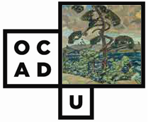
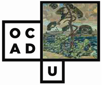

Accessibility of Office Documents and Office Applications
This site can help you create accessible office documents and choose accessible office applications for your organization. The guidance is based primarily on WCAG 2.0 and ATAG 1.0. For more details, see background information.
Authoring Techniques for Accessible Office Documents
Word Processing Applications:
- Microsoft Word
- Google docs: Document (Feb 2011) NL
- iWork Pages '09 NL
- OpenOffice Writer (v3.4) and LibreOffice Writer (v4.0.4.2) NL FR
- Corel WordPerfect X5
Spreadsheets Applications:
- Microsoft Excel
- Google docs: Spreadsheet (Feb 2011)
- iWork Numbers '09
- OpenOffice Calc (v3.2)
- Corel Quattro Pro X5
Presentation Applications:
- Microsoft Powerpoint
- Google docs: Presentation (Feb 2011)
- iWork Keynote '09
- OpenOffice Impress (v3.2)
- Corel Presentations X5
PDF Production Applications:
- Adobe Acrobat
- Adobe InDesign CS6
eBook Production Applications:
Overview and Assessment Framework
The Overview provides a high-level introduction to the project and the relationship between the different documents that are part of the ADOD Project. The Assessment Framework provides a low-level mechanism for assessing the accessibility of office documents, office document formats and office applications based on WCAG 2.0 and ATAG 1.0:
Office Application Accessibility Reviews
These documents are reviews of the accessibility of office applications for users with disabilities. These reviews may be useful to users, employers and others. However, it should be noted that the reviews are intended to be informative, but not definitive, and that they can be outdated by updates to the office applications or assistive technologies. It is best practice to consult other reviews and to test applications in your work context (e.g., using a "demo" version) before making a purchase or a full organizational switch.
Office Application Accessibility Reviews
Other Languages
Versions of documents on this site are available from our Other Languages page.
The Accessible Office Documents Project welcomes translation assistance. If you are interested in translating any of the documents on this site, please see our Translation Policy.
Questions, Comments or Corrections
Please send any questions, comments or corrections to adod-comments@idrc.ocad.ca.
Background Information
While information about how to create accessible office documents currently exists on a range of web sites, the information can be incomplete, vendor-biased or specific to only a single office application. Governments, public sector organizations, and service organization that wish to comply with accessibility requirements, have expressed the need for centralized guidance for creating accessible office documents.
Our guidance supports the W3C-WAI process as it is based on WCAG 2.0 and ATAG 1.0.
Audiences
- users of office applications
- purchasers of office applications
- office applications/document format policy-makers
- accessibility specialists
- people with disabilities in any of the preceding categories
Public Review
In early October 2010, a public invitation to review and comment on the documents developed for the Accessible Digital Office Documents Project was issued. By the end of October we had received feedback from 11 contributors, encompassing accessibility experts, organizations and office application developers. Thank you to everyone who contributed feedback!
Authors
Jutta Treviranus (Principal Investigator), Jan Richards, Sabrina Ruplall, Vellicia Christanto.
Acknowledgements
This project has been developed by the Inclusive Design Research Centre, OCAD University as part of an EnAbling Change Partnership project with the Government of Ontario and UNESCO (United Nations Educational, Scientific and Cultural Organization).

Substantial contributions have also been made to the project by AnySurfer, the City of Toronto, and OCAD University.
 


Accessible Digital Office Documents (ADOD) Project by Inclusive Design Research Centre (IDRC) is licensed under a Creative Commons Attribution-ShareAlike 3.0 Unported License.